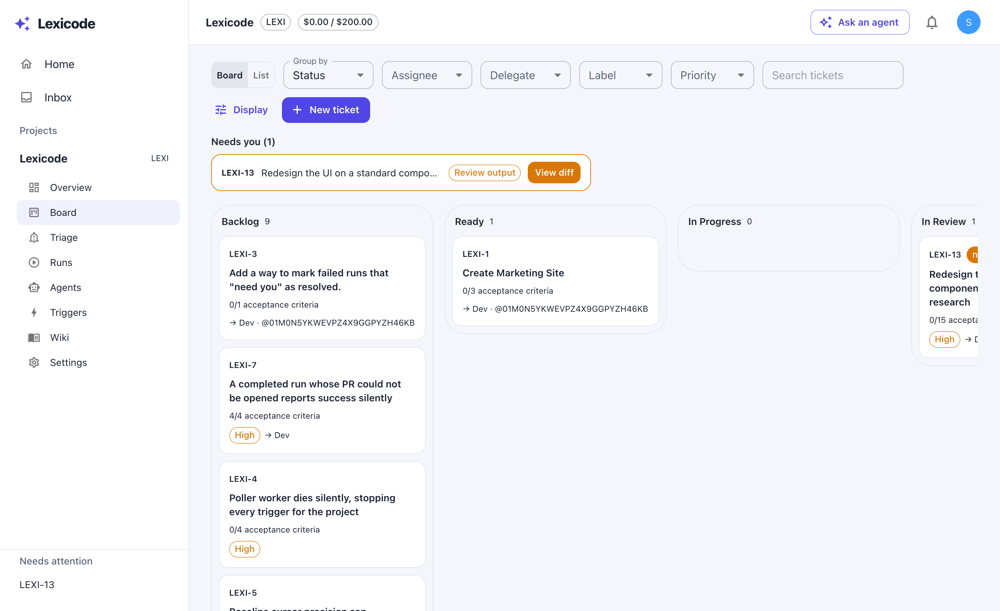
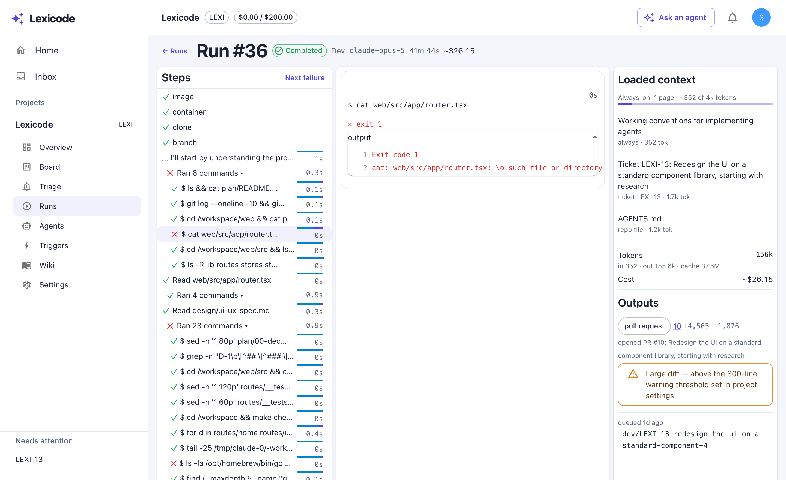

Lexicode runs a roster of coding agents against your repository, from a board you already know how to use. Write the ticket, delegate it, review the PR.

Nothing spends a dollar until you say run. Dragging a card never starts an agent — starting one is its own visible act, and the board answers with where the run actually is, not a hopeful “started”.
Agents open pull requests; they never merge them. Reviews, approvals, and every question an agent can’t answer land in one inbox that only ever shows what needs a human.
Each command, each file, the context the agent was given, what it cost — and the failures, in red, exactly where they happened. When it ends, the output is a branch and a pull request, not a story.

Triggers start agents when the repo moves Reviews loop until the work holds up A wiki your agents actually read Budgets that stop runs, not surprise you
Lexicode is a single local binary: it serves the board, runs agents in containers, and talks to GitHub with your token. Nothing leaves your machine that you didn’t send.